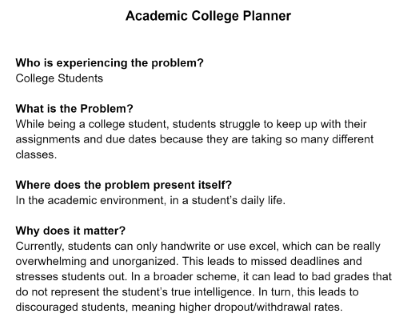
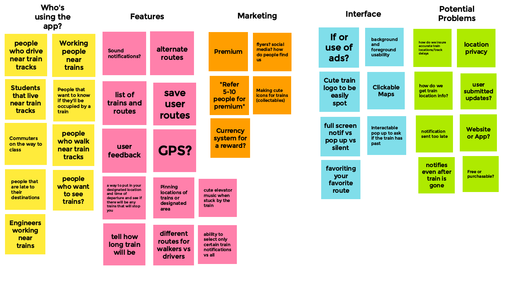
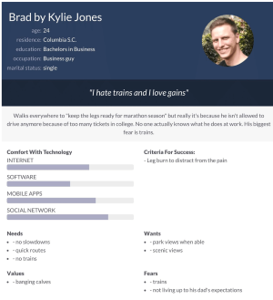
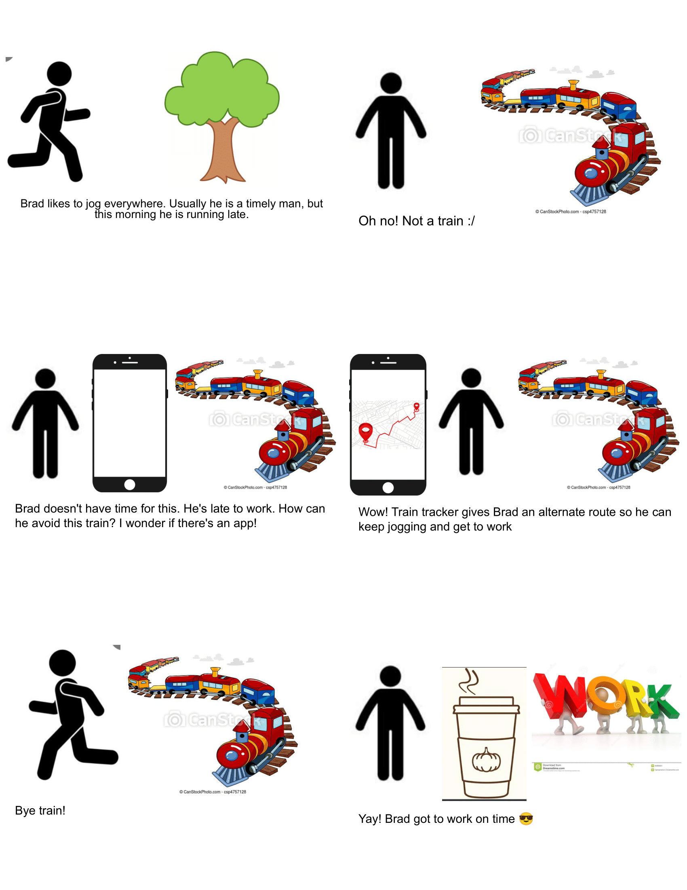
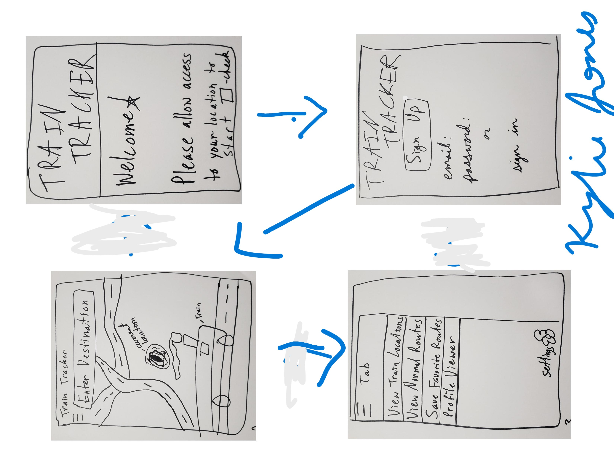

Hello Elizabeth Jones


<!---

<!DOCTYPE html>
<html>
    <head>
        <title>CSCE 190: Kylie Jones</title>
        <link rel="stylesheet" href="styles.css">
    </head>
    <body> 
        <h1>Kylie Jones's CSCE 190 Site</h1>

        -- Problem Statement Assignment --
        <section class="assignment">
            <a href="files/problem-statement.pdf"></a>
                <section class="ass-details">
                    <a href="files/problem-statement.pdf"><h2>Problem Statement: Train Tracker</h2></a>

                <p>Users are unhappy because waiting for a train to pass causes them to be late. Our solution should provide users ways to not be occupied by the train.
                     </p>
        
                </section>
        </section>

        -- Affinity Diagram Assignment --
        <section class="assignment">
            <a href="files/affinity-diagram.pdf"></a>
                <section class="ass-details">
                    <a href="files/affinity-diagram.pdf"><h2>Affinity Diagram: Train Tracker</h2></a>

                <p> My group and I brainstormed various functionalities and ideas for our Train Tracker program. 
                     </p>
        
                </section>
        </section>
         -- Persona Assignment --
         <section class="assignment">
            <a href="files/personas.pdf"></a>
                <section class="ass-details">
                    <a href="files/personas.pdf"><h2>Persona: 4 Personas for Train Tracker App </h2></a>

                <p> Personas of a typical train tracker app user. 
                     </p>
        
                </section>
        </section>
 <!-- Storyboard Assignment --
 <section class="assignment">
    <a href="files/storyboards.pdf"></a>
        <section class="ass-details">
            <a href="files/storyboards.pdf"><h2>Storyboards: 4 Storyboards for Train Tracker App </h2></a>

        <p> Storyboards of situations where the train tracker app could be utilized. 
             </p>

        </section>
</section>

    <!-- Sketches Assignment --
    <section class="assignment">
        <a href="files/sketches.pdf"></a>
            <section class="ass-details">
                <a href="files/sketches.pdf"><h2>Sketches: 4 Sketches for Train Tracker App </h2></a>

            <p> Sketches of train tracker app screens. 
                 </p>
    
            </section>
    </section>

    </body>
   
    
</html>
-->


